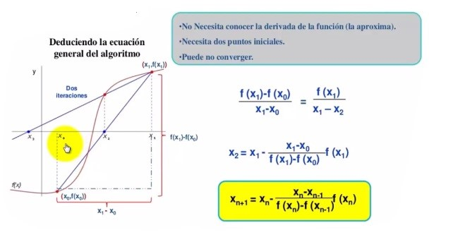
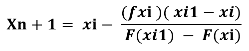
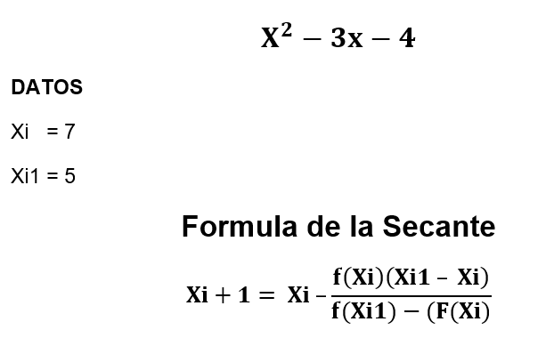
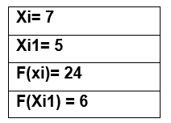
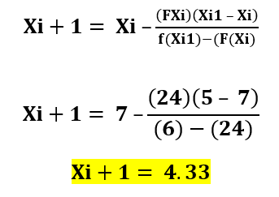
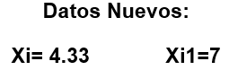
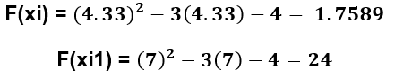
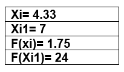

El método de la secante es un algoritmo de la raíz de investigación que utiliza una serie de raíces de las líneas secantes para aproximar mejor la raíz de una función f.
El método se basa en obtener la ecuación de la recta que pasa por los puntos (xn−1, f(xn−1)) y (xn, f(xn)). A dicha recta se le llama secante por cortar la gráfica de la función.
nos queda la Formula Final:

Donde
Xi = Xn
Xn-1= Xi1
Encontrar la raíz de la Ecuación:
Evaluamos los valores iniciales en la ecuación dada

Preparamos los valores obtenidos:
Sustituimos los valores en la formula
Así obtenemos el nuevo valor para Xi. Mientras que Xi pasa a ser el nuevo Xi1
Luego con los valores nuevos se vuelven a repetir todas las ecuaciones anteriores:
Los nuevos datos son:
y sustituidos nuevamente en la formula quedan:

de esta forma sucesivamente hasta que se encuentre a raiz, con ayuda de Excel podemos crear una tabla o plantilla que nos muesre los cálculos. Com la siguienteÑ

Hemos preparado una pantilla en excel donde puedes resolver ejercicios por el método de la Secante
Descarga Aquí
Universidad Nacional de Ingeniería. (2016). Método de la Secante. 2018, de site. googles Sitio web:
https://sites.google.com/site/cm4312014/sis/metodo-de-la-secante
CctMexico. (2017). Secante | Raíces | Métodos Numéricos | Básico. 2019, de Youtube Sitio web:
https://www.youtube.com/watch?v=YOHtIzPmfzE